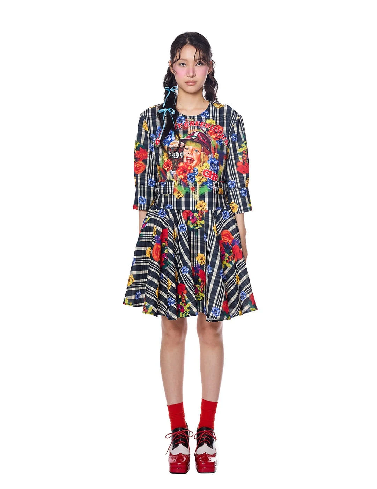
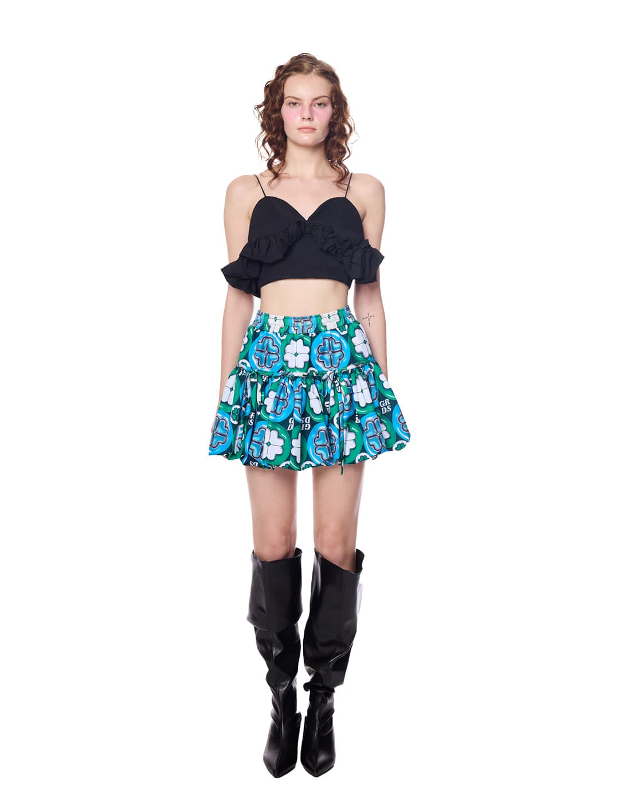
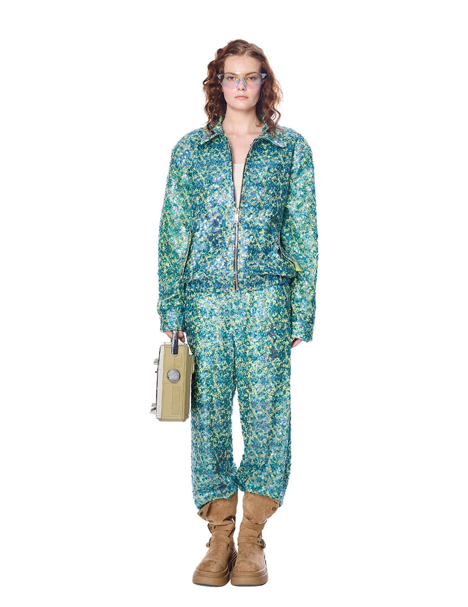
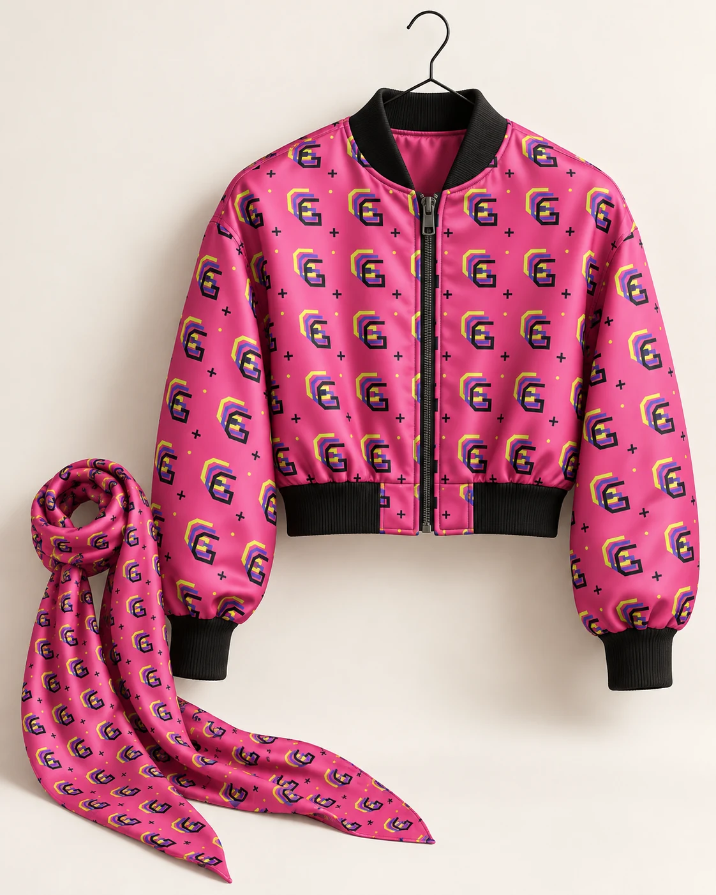
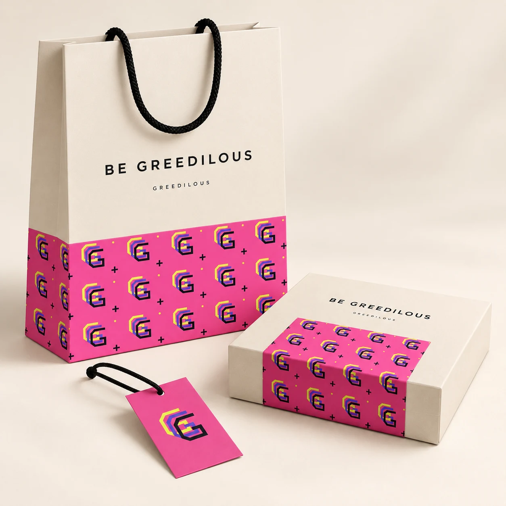

드러내다.
나의 취향, 색, 상상력을
화려하게 표현합니다.
BRAND CORE PROPOSAL 2026

GREEDILOUS / 26SSA NEW CHAPTER OF GREEDILOUS
나만의 화려함을 거듭 표현하라.
자신의 색과 취향을 펼치고,
그 표현을 나다운 인상으로 쌓아가는 태도.
02 / ORIGIN
이름에 담긴 가능성그리디어스는 Greedy와 Fabulous에서 시작했습니다.
더 표현하고 싶은 마음과 환상적인 매력.
BE GREEDILOUS는 그 이름을 자기표현의 태도로 확장합니다.
내 취향에 솔직하고, 화려함을 기꺼이 즐기는 사람.
그 표현을 거듭하며 자신만의 인상을 남기는 사람.
나의 취향과 상상력을
계속 표현하려는 열망.
그 마음을 대담하고
화려하게 드러내는 방식.
이름의 유래: 박윤희 인터뷰 ↗ ‘반복’과의 연결은 리브랜딩을 위한 해석입니다.
03 / HERITAGE
우리가 이어갈 자산그리디어스는 독창적인 프린트, 대담한 색,
미래를 향한 상상력으로 자신의 세계를 펼쳐왔습니다.
BE GREEDILOUS는 이 자산을 이어갑니다.
대표 모티브와 표현 원리를 정리해,
새로운 시즌에서도 같은 태도가 읽히게 합니다.

프린트를 통해 펼쳐온 독창적인 세계.
자신의 취향을 선명하게 드러내는 감각.

나다움을 즐기고 표현하는 태도.
이미지: GREEDILOUS 공식 26SS 제품 자료 기존의 화려함을 새로운 브랜드 코어의 출발점으로 삼습니다.
04 / MEANING
반복을 우리의 태도로취향은 선택으로 드러나고,
거듭하는 표현은 인상으로 남습니다.
나의 취향, 색, 상상력을
화려하게 표현합니다.
나만의 표현을 계속 선택하고,
새로운 모습으로 펼칩니다.
그 표현이 쌓여,
나를 알아볼 수 있는 인상이 됩니다.
05 / BRAND CORE
새로움을 연결하는 중심브랜드의 코어는 자신의 존재를 선명하게 드러내는 힘.
화려함은 자기표현의 언어,
반복은 고유한 인상을 쌓는 원리,
BE GREEDILOUS는 그 태도를 권하는 문장입니다.
사람들이 자신의 취향과 개성을 자유롭게 표현하도록 힘을 줍니다.
강렬한 색과 프린트, 풍부한 상상력으로 자기표현을 확장합니다.
고유한 표현을 이어가고 변주하며, 알아볼 수 있는 정체성을 만듭니다.
그리디어스를 통해 자신만의 개성과 인상을 드러낼 수 있게 합니다.
WHAT CONTINUES
자기표현을 북돋는 태도
대담한 색과 프린트의 감각
아카이브에서 선정할 대표 모티브
WHAT EVOLVES
시즌마다 펼쳐지는 이야기
모티브의 구성, 크기와 소재
컬렉션, 협업과 경험으로의 확장
06 / BRAND SLOGAN
브랜드 이름이 태도가 되다디자이너에게는 자신의 창작 언어를 이어가는 다짐.
고객에게는 자신의 취향을 거듭 표현하는 초대.
브랜드와 사람이 하나의 태도로 만납니다.
나만의 화려함을 거듭 표현하라.
좋아하는 색과 형태를 스스로 선택하고,
내가 원하는 모습으로 드러냅니다.
그 선택을 새로운 장면과 방식으로 이어가며,
나를 알아볼 수 있는 인상을 쌓습니다.
GREEDILOUS — 반복스러운고유한 화려함을 거듭 표현하며, 자신만의 인상을 쌓아가는.
GREEDILOUSLY — 반복스럽게자신의 색과 취향을 이어가며, 나다운 존재감을 남기는 방식으로.
‘반복스러운’은 이 리브랜딩에서 제안하는 정의이며, GREEDILOUSLY는 브랜드 이름에서 확장한 조어입니다.
07 / REPETITION SYSTEM
태도가 패턴이 되는 과정이 시안에서는 G를 세 겹 겹친 모티브를 제안합니다.
겹침은 자기표현이 쌓이는 모습,
배열은 그 인상이 펼쳐지는 모습을 담습니다.
모티브는 이어가고, 크기와 색은 바꿉니다.
같은 출발점이 다양한 제품과 장면을 연결합니다.
브랜드 이름에서 꺼낸 G.
반복될 표현의 출발점.
같은 G가 조금씩 겹칩니다.
거듭하는 표현을 하나의 모티브로.
모티브를 배열하고 변주합니다.
입고, 받고, 보는 모든 접점으로.
ECHO G / PATTERN STUDY
색과 반복 크기를 바꿔보세요유지하는 것G의 형태 · 세 겹의 구성 · 자기표현의 태도
변주하는 것반복 크기 · 색 조합 · 배열 · 적용 범위
ECHO G는 반복의 원리를 보여주는 신규 모티브 시안입니다. ‘세 번’은 이 시안의 구성 규칙으로 제안하며, 실제 브랜드 자산은 아카이브와 함께 검토합니다.
08 / PATTERN IN PRACTICE
반복 패턴 적용 사례같은 모티브가 의류의 프린트, 패키지의 띠,
캠페인의 리듬으로 펼쳐집니다.
각 접점의 역할에 맞춰 반복의 강도를 조절합니다.
아래 이미지는 새 방향을 검토하기 위한 적용 시안입니다.

재킷에는 대담한 크기의 전면 프린트,
스카프에는 작은 크기의 촘촘한 반복.
같은 모티브가 다른 실루엣과 움직임을 만납니다.
AI로 제작한 의류 적용 시안 · 실제 출시 제품이 아닙니다.

쇼핑백의 띠, 박스의 슬리브, 행택의 단일 모티브.
여백 속에 패턴을 집중해 화려함의 밀도를 조절합니다.
의류에서 만난 표현이 포장의 경험으로 이어집니다.
AI로 제작한 패키지 적용 시안 · 실제 사용 중인 패키지가 아닙니다.
같은 문장을 세 번, 서로 다른 채움과 위치로.
포스터와 화면에서는 문장의 리듬을 이어가고,
패턴의 일부를 같은 그래픽 자산으로 연결합니다.
캠페인 그래픽 및 모션 적용 시안
09 / BE GREEDILOUS
우리의 다음 문장BE GREEDILOUS.
내가 좋아하는 것을 기꺼이 드러내고,
내가 원하는 모습을 거듭 선택하며,
나만의 화려함을 오래 이어가는 것.
BE YOURSELF.
AGAIN AND AGAIN.